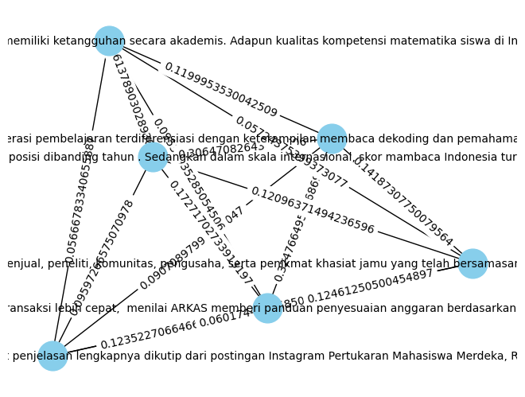

Tugas 4 Crawling Data Berita#
import requests
from bs4 import BeautifulSoup
import pandas as pd
Mengambil data pada web detik.com
def get_data(url, category):
data_page = requests.get(url)
print(url)
if data_page.status_code == 200:
data_berita = []
container = BeautifulSoup(data_page.content, 'html.parser')
container_page = container.find('div', class_='detail__body-text itp_bodycontent')
data = container_page.find_all('p')
judul_berita = container.find('h1', class_='detail__title').text.strip()
tanggal_berita = container.find('div', class_='detail__date').text.strip()
data_content = ''.strip()
for i in data:
if 'ADVERTISEMENT' not in i.text.strip() and 'SCROLL TO RESUME CONTENT' not in i.text.strip() and i.find('div', class_='detail__multiple') == None:
data_content += i.text.strip() + ' '
data_berita.append(judul_berita)
data_berita.append(tanggal_berita)
data_berita.append(data_content)
data_berita.append(category)
return data_berita
Mengambil content pada web detik.com
def get_content (url, category):
menu_page = requests.get(url)
if menu_page.status_code == 200:
content = BeautifulSoup(menu_page.content, 'html.parser')
content_page = content.find('div', class_='grid-row list-content')
container_content = content_page.find_all('div', class_='media media--left media--image-radius block-link')
# Untuk menyimpan url content
data_content = []
for c in container_content:
link_content = c.find('a', class_='media__link')
subtitle = c.find('h2', class_='media__subtitle')
if subtitle == None and '20.detik' not in str(link_content) and 'intermeso' not in str(link_content) and 'foto' not in str(link_content):
data_berita = get_data(link_content.get('href'), category)
data_content.append(data_berita)
next_page = content.find_all('a', class_='pagination__item')
for i in next_page:
if 'Next' == i.text.strip():
return (data_content, i.get('href'))
Mengambil judul dan URL pada web detik.com
def scraping_detik_news(url='https://news.detik.com/indeks', num_content = 1, category= ['Edu']):
response = requests.get(url)
# Untuk mengecek respon url dan mencari menu sidebar
if response.status_code == 200:
html = response.content
soup = BeautifulSoup(html, 'html.parser')
menu = soup.find('nav', class_='static-nav')
link_menu = menu.find_all('a')
# Untuk menyimpan url navbar
save_link_navbar = []
for link in link_menu:
if 'travel' not in link.get('href') and 'wolipop' not in link.get('href'):
save_link_navbar.append([link.find('div').text.strip(), link.get('href')])
# Untuk mengecek respon url dan mencari link content
data_semua_berita = []
for nav in save_link_navbar:
if nav[0] in category:
data_berita, next_page = get_content(nav[1], nav[0])
data_semua_berita += data_berita
next_page_more = next_page
for i in range(num_content-1):
more_content, next_page_more = get_content(next_page_more, nav[0])
data_semua_berita += more_content
df = pd.DataFrame(data_semua_berita, columns=['Judul', 'Tanggal', 'Artikel', 'Category'])
df.to_csv('Data Berita Detik.csv', index=False)
print(f'Data Berhasil Di Simpan dengan Jumlah {len(data_semua_berita)}')
Memanggil fungsi scraping_detik_news()
scraping_detik_news(url='https://news.detik.com/indeks', num_content=1, category=['Edu'])
https://www.detik.com/edu/detikpedia/d-7076209/asam-folat-dan-manfaatnya-bagi-tubuh-perlu-dikonsumsi-ibu-hamil
https://www.detik.com/edu/detikpedia/d-7076078/hari-armada-ri-5-desember-memperingati-perkembangan-armada-tempur-tni-al
https://www.detik.com/edu/detikpedia/d-7076172/apa-itu-asam-sulfat-ini-sifat-manfaat-dan-pertolongan-pertamanya-jika-terpapar
https://www.detik.com/edu/perguruan-tinggi/d-7075243/jadwal-survei-kebinekaan-dan-vcat-pertukaran-mahasiswa-merdeka-4-catat
https://www.detik.com/edu/sekolah/d-7075929/studi-arkas-kurangi-beban-guru-kepsek-yang-double-job
https://www.detik.com/edu/sekolah/d-7075329/dorong-ranking-pisa-indonesia-kemenag-latih-54-ribu-guru-madrasah
https://www.detik.com/edu/edutainment/d-7075939/sah-budaya-sehat-jamu-indonesia-masuk-warisan-budaya-takbenda-unesco
https://www.detik.com/edu/sekolah/d-7075877/menurut-survei-pisa-2022-siswa-kurang-mampu-ri-jago-matematika
https://www.detik.com/edu/sekolah/d-7075808/survei-pisa-2022-siswa-ri-perempuan-ungguli-laki-laki-dalam-membaca-matematika
https://www.detik.com/edu/sekolah/d-7075675/ganti-menteri-nadiem-optimis-platform-teknologi-pendidikan-ri-tetap-jalan
https://www.detik.com/edu/detikpedia/d-7075351/ketahui-apa-itu-pisa-program-evaluasi-sistem-pendidikan-negara
https://www.detik.com/edu/sekolah/d-7075431/studi-rapor-pendidikan-bantu-pendidikan-ri-begini-caranya
https://www.detik.com/edu/perguruan-tinggi/d-7075070/kemenkeu-buka-posisi-magang-merdeka-batch-6-ini-link-daftarnya
https://www.detik.com/edu/detikpedia/d-7074989/manfaat-berpikir-matematis-bagi-siswa-untuk-menjadi-pribadi-yang-lebih-kritis
https://www.detik.com/edu/detikpedia/d-7075043/20-contoh-soal-pas-pendidikan-pancasila-kelas-4-sd-semester-1-kurikulum-merdeka
https://www.detik.com/edu/sekolah/d-7075086/menpan-rb-sebut-akan-ada-stimulus-percepatan-naik-pangkat-untuk-guru-di-daerah
https://www.detik.com/edu/sekolah/d-7075085/nadiem-beberkan-alasan-peringkat-pisa-indonesia-bisa-naik
---------------------------------------------------------------------------
KeyboardInterrupt Traceback (most recent call last)
<ipython-input-5-17bc92fc82ca> in <cell line: 1>()
----> 1 scraping_detik_news(url='https://news.detik.com/indeks', num_content=1, category=['Edu'])
<ipython-input-4-4d12ab966ff4> in scraping_detik_news(url, num_content, category)
18 for nav in save_link_navbar:
19 if nav[0] in category:
---> 20 data_berita, next_page = get_content(nav[1], nav[0])
21 data_semua_berita += data_berita
22
<ipython-input-3-6332406b2823> in get_content(url, category)
12 subtitle = c.find('h2', class_='media__subtitle')
13 if subtitle == None and '20.detik' not in str(link_content) and 'intermeso' not in str(link_content) and 'foto' not in str(link_content):
---> 14 data_berita = get_data(link_content.get('href'), category)
15 data_content.append(data_berita)
16
<ipython-input-2-70b220c0da20> in get_data(url, category)
1 def get_data(url, category):
----> 2 data_page = requests.get(url)
3 print(url)
4 if data_page.status_code == 200:
5 data_berita = []
/usr/local/lib/python3.10/dist-packages/requests/api.py in get(url, params, **kwargs)
71 """
72
---> 73 return request("get", url, params=params, **kwargs)
74
75
/usr/local/lib/python3.10/dist-packages/requests/api.py in request(method, url, **kwargs)
57 # cases, and look like a memory leak in others.
58 with sessions.Session() as session:
---> 59 return session.request(method=method, url=url, **kwargs)
60
61
/usr/local/lib/python3.10/dist-packages/requests/sessions.py in request(self, method, url, params, data, headers, cookies, files, auth, timeout, allow_redirects, proxies, hooks, stream, verify, cert, json)
587 }
588 send_kwargs.update(settings)
--> 589 resp = self.send(prep, **send_kwargs)
590
591 return resp
/usr/local/lib/python3.10/dist-packages/requests/sessions.py in send(self, request, **kwargs)
701
702 # Send the request
--> 703 r = adapter.send(request, **kwargs)
704
705 # Total elapsed time of the request (approximately)
/usr/local/lib/python3.10/dist-packages/requests/adapters.py in send(self, request, stream, timeout, verify, cert, proxies)
484
485 try:
--> 486 resp = conn.urlopen(
487 method=request.method,
488 url=url,
/usr/local/lib/python3.10/dist-packages/urllib3/connectionpool.py in urlopen(self, method, url, body, headers, retries, redirect, assert_same_host, timeout, pool_timeout, release_conn, chunked, body_pos, preload_content, decode_content, **response_kw)
789
790 # Make the request on the HTTPConnection object
--> 791 response = self._make_request(
792 conn,
793 method,
/usr/local/lib/python3.10/dist-packages/urllib3/connectionpool.py in _make_request(self, conn, method, url, body, headers, retries, timeout, chunked, response_conn, preload_content, decode_content, enforce_content_length)
466 # Trigger any extra validation we need to do.
467 try:
--> 468 self._validate_conn(conn)
469 except (SocketTimeout, BaseSSLError) as e:
470 self._raise_timeout(err=e, url=url, timeout_value=conn.timeout)
/usr/local/lib/python3.10/dist-packages/urllib3/connectionpool.py in _validate_conn(self, conn)
1095 # Force connect early to allow us to validate the connection.
1096 if conn.is_closed:
-> 1097 conn.connect()
1098
1099 if not conn.is_verified:
/usr/local/lib/python3.10/dist-packages/urllib3/connection.py in connect(self)
640 )
641
--> 642 sock_and_verified = _ssl_wrap_socket_and_match_hostname(
643 sock=sock,
644 cert_reqs=self.cert_reqs,
/usr/local/lib/python3.10/dist-packages/urllib3/connection.py in _ssl_wrap_socket_and_match_hostname(sock, cert_reqs, ssl_version, ssl_minimum_version, ssl_maximum_version, cert_file, key_file, key_password, ca_certs, ca_cert_dir, ca_cert_data, assert_hostname, assert_fingerprint, server_hostname, ssl_context, tls_in_tls)
781 server_hostname = normalized
782
--> 783 ssl_sock = ssl_wrap_socket(
784 sock=sock,
785 keyfile=key_file,
/usr/local/lib/python3.10/dist-packages/urllib3/util/ssl_.py in ssl_wrap_socket(sock, keyfile, certfile, cert_reqs, ca_certs, server_hostname, ssl_version, ciphers, ssl_context, ca_cert_dir, key_password, ca_cert_data, tls_in_tls)
469 pass
470
--> 471 ssl_sock = _ssl_wrap_socket_impl(sock, context, tls_in_tls, server_hostname)
472 return ssl_sock
473
/usr/local/lib/python3.10/dist-packages/urllib3/util/ssl_.py in _ssl_wrap_socket_impl(sock, ssl_context, tls_in_tls, server_hostname)
513 return SSLTransport(sock, ssl_context, server_hostname)
514
--> 515 return ssl_context.wrap_socket(sock, server_hostname=server_hostname)
/usr/lib/python3.10/ssl.py in wrap_socket(self, sock, server_side, do_handshake_on_connect, suppress_ragged_eofs, server_hostname, session)
511 # SSLSocket class handles server_hostname encoding before it calls
512 # ctx._wrap_socket()
--> 513 return self.sslsocket_class._create(
514 sock=sock,
515 server_side=server_side,
/usr/lib/python3.10/ssl.py in _create(cls, sock, server_side, do_handshake_on_connect, suppress_ragged_eofs, server_hostname, context, session)
1098 # non-blocking
1099 raise ValueError("do_handshake_on_connect should not be specified for non-blocking sockets")
-> 1100 self.do_handshake()
1101 except (OSError, ValueError):
1102 self.close()
/usr/lib/python3.10/ssl.py in do_handshake(self, block)
1369 if timeout == 0.0 and block:
1370 self.settimeout(None)
-> 1371 self._sslobj.do_handshake()
1372 finally:
1373 self.settimeout(timeout)
KeyboardInterrupt:
from nltk.tokenize import word_tokenize
from nltk.corpus import stopwords
from sklearn.feature_extraction.text import TfidfVectorizer
from sklearn.feature_extraction.text import CountVectorizer
import warnings
import pandas as pd
import numpy as np
import nltk
import re
import csv
nltk.download('stopwords')
nltk.download('punkt')
warnings.filterwarnings('ignore')
[nltk_data] Downloading package stopwords to /root/nltk_data...
[nltk_data] Unzipping corpora/stopwords.zip.
[nltk_data] Downloading package punkt to /root/nltk_data...
[nltk_data] Unzipping tokenizers/punkt.zip.
df = pd.read_csv('/content/Data Berita Detik.csv')
df
| Judul | Tanggal | Artikel | Category | |
|---|---|---|---|---|
| 0 | Jadwal Survei Kebinekaan dan VCAT Pertukaran M... | Rabu, 06 Des 2023 20:30 WIB | Pertukaran Mahasiswa Merdeka 4 (PMM 4) memasuk... | Edu |
| 1 | Studi: ARKAS Kurangi Beban Guru & Kepsek yang ... | Rabu, 06 Des 2023 20:00 WIB | Aplikasi Rencana Kegiatan dan Anggaran Sekolah... | Edu |
| 2 | Dorong Ranking PISA Indonesia, Kemenag Latih 5... | Rabu, 06 Des 2023 19:30 WIB | Pusdiklat Tenaga Teknis Pendidikan dan Keagama... | Edu |
| 3 | Sah! Budaya Sehat Jamu Indonesia Masuk Warisan... | Rabu, 06 Des 2023 19:02 WIB | Jamu Indonesia resmi masuk Warisan Budaya Takb... | Edu |
| 4 | Menurut Survei PISA 2022, Siswa Kurang Mampu R... | Rabu, 06 Des 2023 18:30 WIB | Organization for Economic Co-operation and Dev... | Edu |
| 5 | Survei PISA 2022: Siswa RI Perempuan Ungguli L... | Rabu, 06 Des 2023 18:00 WIB | Berdasarkan survei Programme for International... | Edu |
| 6 | Ganti Menteri, Nadiem Optimis Platform Teknolo... | Rabu, 06 Des 2023 17:30 WIB | Studi Oliver Wyman mendapati, intervensi tekno... | Edu |
| 7 | Ketahui Apa Itu PISA, Program Evaluasi Sistem ... | Rabu, 06 Des 2023 17:00 WIB | Programme for International Student Assessment... | Edu |
| 8 | Studi: Rapor Pendidikan Bantu Pendidikan RI, B... | Rabu, 06 Des 2023 16:30 WIB | Intervensi teknologi Kemendikbudristek dinilai... | Edu |
| 9 | Kemenkeu Buka Posisi Magang Merdeka Batch 6, I... | Rabu, 06 Des 2023 16:00 WIB | Kementerian Keuangan (Kemenkeu) buka kesempata... | Edu |
| 10 | Manfaat Berpikir Matematis bagi Siswa untuk Me... | Rabu, 06 Des 2023 15:30 WIB | Mengembangkan cara berpikir matematis pada ana... | Edu |
| 11 | 20 Contoh Soal PAS Pendidikan Pancasila Kelas ... | Rabu, 06 Des 2023 15:00 WIB | Pendidikan Pancasila merupakan salah satu mata... | Edu |
| 12 | MenPAN-RB Sebut Akan Ada Stimulus Percepatan N... | Rabu, 06 Des 2023 14:30 WIB | Menteri Pendayagunaan Aparatur Negara dan Refo... | Edu |
| 13 | Nadiem Beberkan Alasan Peringkat PISA Indonesi... | Rabu, 06 Des 2023 14:00 WIB | Kemendikbudristek telah merilis hasil studi PI... | Edu |
| 14 | 20 Contoh Soal PAS Bahasa Indonesia Kelas 4 SD... | Rabu, 06 Des 2023 13:30 WIB | Penilaian Akhir Semester (PAS) akan siswa hada... | Edu |
| 15 | Sisa Pemukiman Zaman Perunggu Tertangkap Kamer... | Rabu, 06 Des 2023 13:00 WIB | Sebuah citra satelit telah berhasil menangkap ... | Edu |
| 16 | Daur Hidup Ayam: Pembuahan Telur, Anak Ayam, A... | Rabu, 06 Des 2023 12:00 WIB | Detikers, pernahkah kamu melihat telur ayam ya... | Edu |
| 17 | Siap-siap, Skema Penerimaan Maba 2024 Diumumka... | Rabu, 06 Des 2023 11:30 WIB | Seleksi Nasional Penerimaan Mahasiswa Baru (SN... | Edu |
def cleaning(text):
# Remove non-alphabetic characters (letters, spaces, and punctuation other than periods)
text = re.sub(r'[^a-zA-Z\s.,]', '', text).strip()
return text
df['Cleaning'] = df['Artikel'].apply(cleaning)
df['Cleaning']
0 Pertukaran Mahasiswa Merdeka PMM memasuki pr...
1 Aplikasi Rencana Kegiatan dan Anggaran Sekolah...
2 Pusdiklat Tenaga Teknis Pendidikan dan Keagama...
3 Jamu Indonesia resmi masuk Warisan Budaya Takb...
4 Organization for Economic Cooperation and Deve...
5 Berdasarkan survei Programme for International...
6 Studi Oliver Wyman mendapati, intervensi tekno...
7 Programme for International Student Assessment...
8 Intervensi teknologi Kemendikbudristek dinilai...
9 Kementerian Keuangan Kemenkeu buka kesempatan ...
10 Mengembangkan cara berpikir matematis pada ana...
11 Pendidikan Pancasila merupakan salah satu mata...
12 Menteri Pendayagunaan Aparatur Negara dan Refo...
13 Kemendikbudristek telah merilis hasil studi PI...
14 Penilaian Akhir Semester PAS akan siswa hadapi...
15 Sebuah citra satelit telah berhasil menangkap ...
16 Detikers, pernahkah kamu melihat telur ayam ya...
17 Seleksi Nasional Penerimaan Mahasiswa Baru SNP...
Name: Cleaning, dtype: object
from nltk.tokenize import sent_tokenize
# Fungsi untuk mengekstrak artikel menjadi kalimat
def extract_sentences(article):
sentences = sent_tokenize(article)
return sentences
# Menerapkan fungsi extract_sentences ke setiap baris dalam kolom 'artikel'
df['Kalimat'] = df['Cleaning'].apply(extract_sentences)
df['Kalimat']
0 [Pertukaran Mahasiswa Merdeka PMM memasuki p...
1 [Aplikasi Rencana Kegiatan dan Anggaran Sekola...
2 [Pusdiklat Tenaga Teknis Pendidikan dan Keagam...
3 [Jamu Indonesia resmi masuk Warisan Budaya Tak...
4 [Organization for Economic Cooperation and Dev...
5 [Berdasarkan survei Programme for Internationa...
6 [Studi Oliver Wyman mendapati, intervensi tekn...
7 [Programme for International Student Assessmen...
8 [Intervensi teknologi Kemendikbudristek dinila...
9 [Kementerian Keuangan Kemenkeu buka kesempatan...
10 [Mengembangkan cara berpikir matematis pada an...
11 [Pendidikan Pancasila merupakan salah satu mat...
12 [Menteri Pendayagunaan Aparatur Negara dan Ref...
13 [Kemendikbudristek telah merilis hasil studi P...
14 [Penilaian Akhir Semester PAS akan siswa hadap...
15 [Sebuah citra satelit telah berhasil menangkap...
16 [Detikers, pernahkah kamu melihat telur ayam y...
17 [Seleksi Nasional Penerimaan Mahasiswa Baru SN...
Name: Kalimat, dtype: object
df['Kalimat'][0]
['Pertukaran Mahasiswa Merdeka PMM memasuki proses seleksi survei kebinekaan dan value clarification and attitude transformation VCAT.',
'Mahasiswa pendaftar bisa melihat jadwal dan aplikasi survei kebinekaan melalui pesan di akun laman PMM masingmasing.',
'Selain itu, ada berbagai hal yang wajib diperhatikan mahasiswa pada saat pelaksanaan survei kebinekaan dan VCAT.',
'Apa saja Berikut penjelasan lengkapnya dikutip dari postingan Instagram Pertukaran Mahasiswa Merdeka, Rabu .',
'Keterangan SCROLL TO CONTINUE WITH CONTENT Aplikasi survei sama dengan apa yang dipakai saat simulasi, sehingga peserta tidak perlu mengunduh dan menginstal aplikasi lagi pada saat pelaksanaan tes.',
'Untuk cara menginstal aplikasi CBTANAExamBrowser, detikers bisa lihat di sini.',
'Semoga berhasil detikers']
from sklearn.feature_extraction.text import TfidfVectorizer
df['Dokumen'] = df['Kalimat'].apply(lambda sentences: ' '.join(sentences))
tfidf_vectorizer = TfidfVectorizer()
tfidf_matrix = tfidf_vectorizer.fit_transform(df['Dokumen'])
tfidf_df = pd.DataFrame(data=tfidf_matrix.toarray(), columns=tfidf_vectorizer.get_feature_names_out())
tfidf_df
| abdullah | acakc | acara | ada | adakan | adalah | adanya | adapun | adat | adil | ... | ya | yaitu | yakni | yang | yopi | yopib | youtube | yuk | zaman | zulkifli | |
|---|---|---|---|---|---|---|---|---|---|---|---|---|---|---|---|---|---|---|---|---|---|
| 0 | 0.000000 | 0.000000 | 0.000000 | 0.050442 | 0.000000 | 0.000000 | 0.000000 | 0.000000 | 0.000000 | 0.000000 | ... | 0.000000 | 0.000000 | 0.000000 | 0.065231 | 0.000000 | 0.000000 | 0.000000 | 0.000000 | 0.000000 | 0.00000 |
| 1 | 0.000000 | 0.000000 | 0.000000 | 0.016480 | 0.000000 | 0.000000 | 0.021297 | 0.000000 | 0.000000 | 0.000000 | ... | 0.000000 | 0.000000 | 0.000000 | 0.095905 | 0.000000 | 0.000000 | 0.000000 | 0.000000 | 0.000000 | 0.00000 |
| 2 | 0.000000 | 0.000000 | 0.000000 | 0.016867 | 0.000000 | 0.028473 | 0.000000 | 0.000000 | 0.000000 | 0.000000 | ... | 0.000000 | 0.050931 | 0.000000 | 0.032718 | 0.000000 | 0.000000 | 0.027899 | 0.000000 | 0.000000 | 0.00000 |
| 3 | 0.000000 | 0.000000 | 0.000000 | 0.012576 | 0.000000 | 0.010615 | 0.000000 | 0.000000 | 0.000000 | 0.000000 | ... | 0.000000 | 0.000000 | 0.000000 | 0.105711 | 0.000000 | 0.000000 | 0.000000 | 0.000000 | 0.000000 | 0.00000 |
| 4 | 0.000000 | 0.000000 | 0.000000 | 0.000000 | 0.000000 | 0.000000 | 0.000000 | 0.098598 | 0.000000 | 0.000000 | ... | 0.000000 | 0.000000 | 0.000000 | 0.030326 | 0.000000 | 0.000000 | 0.000000 | 0.000000 | 0.000000 | 0.00000 |
| 5 | 0.000000 | 0.000000 | 0.000000 | 0.000000 | 0.000000 | 0.038575 | 0.000000 | 0.000000 | 0.000000 | 0.000000 | ... | 0.000000 | 0.000000 | 0.000000 | 0.088653 | 0.000000 | 0.000000 | 0.037798 | 0.000000 | 0.000000 | 0.00000 |
| 6 | 0.000000 | 0.000000 | 0.000000 | 0.016683 | 0.000000 | 0.000000 | 0.021558 | 0.000000 | 0.000000 | 0.000000 | ... | 0.000000 | 0.000000 | 0.000000 | 0.118659 | 0.000000 | 0.000000 | 0.000000 | 0.000000 | 0.000000 | 0.00000 |
| 7 | 0.000000 | 0.000000 | 0.000000 | 0.000000 | 0.000000 | 0.026144 | 0.000000 | 0.000000 | 0.000000 | 0.000000 | ... | 0.000000 | 0.023382 | 0.000000 | 0.170234 | 0.000000 | 0.000000 | 0.000000 | 0.000000 | 0.000000 | 0.00000 |
| 8 | 0.000000 | 0.000000 | 0.000000 | 0.023391 | 0.024587 | 0.009872 | 0.015113 | 0.000000 | 0.000000 | 0.000000 | ... | 0.000000 | 0.017658 | 0.043042 | 0.136121 | 0.000000 | 0.000000 | 0.000000 | 0.000000 | 0.000000 | 0.00000 |
| 9 | 0.000000 | 0.000000 | 0.000000 | 0.061337 | 0.000000 | 0.000000 | 0.000000 | 0.000000 | 0.000000 | 0.000000 | ... | 0.000000 | 0.000000 | 0.000000 | 0.039661 | 0.000000 | 0.000000 | 0.000000 | 0.056434 | 0.000000 | 0.00000 |
| 10 | 0.000000 | 0.000000 | 0.000000 | 0.015814 | 0.000000 | 0.026696 | 0.000000 | 0.000000 | 0.000000 | 0.000000 | ... | 0.000000 | 0.000000 | 0.000000 | 0.163604 | 0.000000 | 0.000000 | 0.000000 | 0.000000 | 0.000000 | 0.00000 |
| 11 | 0.000000 | 0.000000 | 0.000000 | 0.000000 | 0.000000 | 0.090291 | 0.017279 | 0.000000 | 0.028111 | 0.056222 | ... | 0.000000 | 0.000000 | 0.000000 | 0.164275 | 0.000000 | 0.000000 | 0.000000 | 0.000000 | 0.000000 | 0.00000 |
| 12 | 0.056212 | 0.000000 | 0.056212 | 0.106953 | 0.000000 | 0.045137 | 0.000000 | 0.000000 | 0.000000 | 0.000000 | ... | 0.168635 | 0.000000 | 0.000000 | 0.138312 | 0.000000 | 0.000000 | 0.000000 | 0.000000 | 0.000000 | 0.00000 |
| 13 | 0.000000 | 0.000000 | 0.000000 | 0.000000 | 0.000000 | 0.038686 | 0.029614 | 0.000000 | 0.000000 | 0.000000 | ... | 0.000000 | 0.000000 | 0.000000 | 0.118544 | 0.000000 | 0.000000 | 0.037907 | 0.000000 | 0.000000 | 0.00000 |
| 14 | 0.000000 | 0.027006 | 0.000000 | 0.025692 | 0.000000 | 0.119273 | 0.000000 | 0.000000 | 0.000000 | 0.000000 | ... | 0.000000 | 0.019395 | 0.000000 | 0.224272 | 0.027006 | 0.027006 | 0.000000 | 0.023639 | 0.000000 | 0.00000 |
| 15 | 0.000000 | 0.000000 | 0.000000 | 0.000000 | 0.000000 | 0.061915 | 0.023698 | 0.000000 | 0.000000 | 0.000000 | ... | 0.000000 | 0.000000 | 0.000000 | 0.118577 | 0.000000 | 0.000000 | 0.000000 | 0.000000 | 0.154211 | 0.00000 |
| 16 | 0.000000 | 0.000000 | 0.000000 | 0.000000 | 0.000000 | 0.028823 | 0.000000 | 0.000000 | 0.000000 | 0.000000 | ... | 0.000000 | 0.000000 | 0.000000 | 0.073601 | 0.000000 | 0.000000 | 0.000000 | 0.000000 | 0.000000 | 0.02393 |
| 17 | 0.000000 | 0.000000 | 0.000000 | 0.000000 | 0.000000 | 0.016410 | 0.000000 | 0.000000 | 0.000000 | 0.000000 | ... | 0.000000 | 0.000000 | 0.035775 | 0.050284 | 0.000000 | 0.000000 | 0.000000 | 0.000000 | 0.000000 | 0.00000 |
18 rows × 2069 columns
# # Menggabungkan DataFrame asli dengan DataFrame TF-IDF
# result_df = pd.concat([df[['Judul']], tfidf_df], axis=1)
# result_df
# Menyimpan hasilnya ke dalam file CSV baru
output_file_path = 'berita_dalam_kalimat1.csv'
df.to_csv(output_file_path, index=False)
# import library untuk menghitung cosinus similarity
from sklearn.metrics.pairwise import cosine_similarity
from sklearn.feature_extraction.text import TfidfVectorizer
import networkx as nx
import matplotlib.pyplot as plt
from sklearn.metrics.pairwise import cosine_similarity
len_kalimat = df['Dokumen'].shape[0]
temp = []
node = 0
for i in range(len_kalimat):
for j in range(len_kalimat - i):
tfidf_vectorizer = TfidfVectorizer()
tfidf_matrix = tfidf_vectorizer.fit_transform([df['Dokumen'][i], df['Dokumen'][i+j]])
cosine_sim = cosine_similarity(tfidf_matrix[0], tfidf_matrix[1])
similarity_score = cosine_sim[0][0]
temp.append(["node-{} {}&{}".format(node, i, i+j), similarity_score])
node +=1
temp
[['node-0 0&0', 1.0000000000000002],
['node-1 0&1', 0.20097298486124032],
['node-2 0&2', 0.1364844265199152],
['node-3 0&3', 0.10932992086487409],
['node-4 0&4', 0.07714100591290053],
['node-5 0&5', 0.12957794565256378],
['node-6 0&6', 0.21296016310505964],
['node-7 0&7', 0.15889500989597535],
['node-8 0&8', 0.20185285074396764],
['node-9 0&9', 0.20981861656679168],
['node-10 0&10', 0.16761917913578728],
['node-11 0&11', 0.14484042903297267],
['node-12 0&12', 0.17054792547486985],
['node-13 0&13', 0.16097871870798858],
['node-14 0&14', 0.16092473719114056],
['node-15 0&15', 0.12115323577043072],
['node-16 0&16', 0.1069666573304076],
['node-17 0&17', 0.15157447561235218],
['node-18 1&1', 1.0000000000000002],
['node-19 1&2', 0.4073385595722254],
['node-20 1&3', 0.2098149392481521],
['node-21 1&4', 0.12730069456770687],
['node-22 1&5', 0.2270173824254096],
['node-23 1&6', 0.621797092922626],
['node-24 1&7', 0.2917891985210369],
['node-25 1&8', 0.7086474874960572],
['node-26 1&9', 0.20782843710704002],
['node-27 1&10', 0.31949973727745073],
['node-28 1&11', 0.266918324594939],
['node-29 1&12', 0.36422889258275054],
['node-30 1&13', 0.3326106776244175],
['node-31 1&14', 0.22991333119830842],
['node-32 1&15', 0.22769896178681182],
['node-33 1&16', 0.14802677806463493],
['node-34 1&17', 0.19222551213713496],
['node-35 2&2', 1.0000000000000002],
['node-36 2&3', 0.2002931780220338],
['node-37 2&4', 0.13080847235878568],
['node-38 2&5', 0.3211090824691768],
['node-39 2&6', 0.3759182243516652],
['node-40 2&7', 0.39196581655439977],
['node-41 2&8', 0.32249308804205057],
['node-42 2&9', 0.17509050816749183],
['node-43 2&10', 0.24211681796859696],
['node-44 2&11', 0.2125890200002693],
['node-45 2&12', 0.2704563865863765],
['node-46 2&13', 0.6161421906272623],
['node-47 2&14', 0.15540874793267687],
['node-48 2&15', 0.20450825319666152],
['node-49 2&16', 0.12393345734135482],
['node-50 2&17', 0.1456429112182829],
['node-51 3&3', 1.0],
['node-52 3&4', 0.08115648058565672],
['node-53 3&5', 0.1613718126292812],
['node-54 3&6', 0.23286301328923592],
['node-55 3&7', 0.2354275186418758],
['node-56 3&8', 0.22149299963979652],
['node-57 3&9', 0.14107994150703743],
['node-58 3&10', 0.19329848876890005],
['node-59 3&11', 0.22538940104386096],
['node-60 3&12', 0.20532176181583162],
['node-61 3&13', 0.1959214892175187],
['node-62 3&14', 0.19268659769669289],
['node-63 3&15', 0.19995586161290385],
['node-64 3&16', 0.1311598689701896],
['node-65 3&17', 0.12063583945861252],
['node-66 4&4', 1.0000000000000004],
['node-67 4&5', 0.6010838722318628],
['node-68 4&6', 0.1555969745458971],
['node-69 4&7', 0.3761570526818907],
['node-70 4&8', 0.13125838138495416],
['node-71 4&9', 0.07669325681856184],
['node-72 4&10', 0.2600834113018043],
['node-73 4&11', 0.14397179587332187],
['node-74 4&12', 0.14802345855504853],
['node-75 4&13', 0.21647423815658923],
['node-76 4&14', 0.15457521768274846],
['node-77 4&15', 0.11815750892184403],
['node-78 4&16', 0.06764094052404424],
['node-79 4&17', 0.11126416798476271],
['node-80 5&5', 0.9999999999999996],
['node-81 5&6', 0.23236000329823261],
['node-82 5&7', 0.5811830909629602],
['node-83 5&8', 0.2089460612927139],
['node-84 5&9', 0.1159911244934774],
['node-85 5&10', 0.27448138713481374],
['node-86 5&11', 0.22484420754960208],
['node-87 5&12', 0.22376571928190575],
['node-88 5&13', 0.4080059280056369],
['node-89 5&14', 0.22878511022547576],
['node-90 5&15', 0.19780822984730811],
['node-91 5&16', 0.11561656140115566],
['node-92 5&17', 0.17045777395373826],
['node-93 6&6', 1.0],
['node-94 6&7', 0.3066614691098645],
['node-95 6&8', 0.6481778405616538],
['node-96 6&9', 0.20817037789860846],
['node-97 6&10', 0.31229133829929034],
['node-98 6&11', 0.2675440858255829],
['node-99 6&12', 0.4572752481928705],
['node-100 6&13', 0.3858731781392765],
['node-101 6&14', 0.2817951601772512],
['node-102 6&15', 0.2606161219879691],
['node-103 6&16', 0.14115710276689583],
['node-104 6&17', 0.17757388313240438],
['node-105 7&7', 1.0],
['node-106 7&8', 0.32426334260844986],
['node-107 7&9', 0.1532097908811054],
['node-108 7&10', 0.344758786662448],
['node-109 7&11', 0.3005279786780148],
['node-110 7&12', 0.2800154025449194],
['node-111 7&13', 0.5171890632415149],
['node-112 7&14', 0.29075527297012493],
['node-113 7&15', 0.29941915228151006],
['node-114 7&16', 0.16392547474142266],
['node-115 7&17', 0.20817637035552092],
['node-116 8&8', 1.0000000000000004],
['node-117 8&9', 0.21331766948408873],
['node-118 8&10', 0.3191073211284344],
['node-119 8&11', 0.29729715289996334],
['node-120 8&12', 0.36075397424450734],
['node-121 8&13', 0.32206054462882133],
['node-122 8&14', 0.2465572432526196],
['node-123 8&15', 0.24252655740054516],
['node-124 8&16', 0.146940410022807],
['node-125 8&17', 0.19725602902531045],
['node-126 9&9', 1.0],
['node-127 9&10', 0.16585244431754453],
['node-128 9&11', 0.1712534419004085],
['node-129 9&12', 0.22524393712505075],
['node-130 9&13', 0.16202747681516178],
['node-131 9&14', 0.11282711206449902],
['node-132 9&15', 0.12232795048382479],
['node-133 9&16', 0.11559303338897398],
['node-134 9&17', 0.13164346689133638],
['node-135 10&10', 0.9999999999999998],
['node-136 10&11', 0.31510135357470365],
['node-137 10&12', 0.29704140219266134],
['node-138 10&13', 0.24904619638601436],
['node-139 10&14', 0.30577277571144107],
['node-140 10&15', 0.2563295286648552],
['node-141 10&16', 0.19894485249873736],
['node-142 10&17', 0.19091449386617804],
['node-143 11&11', 1.0000000000000002],
['node-144 11&12', 0.25203084300100276],
['node-145 11&13', 0.22815566852452293],
['node-146 11&14', 0.4758861056564614],
['node-147 11&15', 0.23259278910581696],
['node-148 11&16', 0.16946705075935056],
['node-149 11&17', 0.15514593301018184],
['node-150 12&12', 0.9999999999999998],
['node-151 12&13', 0.27598130093671297],
['node-152 12&14', 0.2932031983668038],
['node-153 12&15', 0.3191108778291274],
['node-154 12&16', 0.1594288101001817],
['node-155 12&17', 0.18168384534843346],
['node-156 13&13', 1.0000000000000004],
['node-157 13&14', 0.23766964487495992],
['node-158 13&15', 0.22809458754682058],
['node-159 13&16', 0.12108380027811157],
['node-160 13&17', 0.16338582179791494],
['node-161 14&14', 1.0000000000000002],
['node-162 14&15', 0.2744648617000655],
['node-163 14&16', 0.16873389062991526],
['node-164 14&17', 0.1892779230523246],
['node-165 15&15', 1.0000000000000002],
['node-166 15&16', 0.15794260881421396],
['node-167 15&17', 0.1287025291758457],
['node-168 16&16', 1.0000000000000002],
['node-169 16&17', 0.11664250756477178],
['node-170 17&17', 0.9999999999999999]]
sentences = [df['Dokumen'][0], df['Dokumen'][1], df['Dokumen'][2],df['Dokumen'][3],df['Dokumen'][4],df['Dokumen'][5]]
tfidf_matrix = tfidf_vectorizer.fit_transform(sentences).toarray()
G = nx.Graph()
for i in range(len(sentences)):
for j in range(i + 1, len(sentences)):
similarity_score = cosine_similarity([tfidf_matrix[i]], [tfidf_matrix[j]])[0][0]
print(similarity_score)
if similarity_score > 0.01: # Sesuaikan threshold sesuai kebutuhan
G.add_edge(sentences[i], sentences[j], weight=similarity_score)
0.1235227066466623
0.09070897993379047
0.06017443326850054
0.05666783340655887
0.09597266575070978
0.3247664956968695
0.12461250500454897
0.09536935285054506
0.17271702733913197
0.14187307750079564
0.1199953530042509
0.30647082643466506
0.05724375399373077
0.12096371494236596
0.613789030289309
# Menggambar grafik
pos = nx.spring_layout(G)
edge_labels = {(n1, n2): d['weight'] for n1, n2, d in G.edges(data=True)}
nx.draw(G, pos, with_labels=True, node_size=700, node_color='skyblue', font_size=10)
nx.draw_networkx_edge_labels(G, pos, edge_labels=edge_labels)
plt.show()

closeness_centrality = nx.closeness_centrality(G, distance='weight')
sorted_closeness_centrality = {node: value for node, value in sorted(closeness_centrality.items(), key=lambda item: item[1], reverse=True)}
# Membuat DataFrame dari hasil yang diurutkan
df = pd.DataFrame(list(sorted_closeness_centrality.items()), columns=['Node', 'Closeness Centrality'])
# Menampilkan DataFrame
df
| Node | Closeness Centrality | |
|---|---|---|
| 0 | Pertukaran Mahasiswa Merdeka PMM memasuki pr... | 11.708324 |
| 1 | Organization for Economic Cooperation and Deve... | 10.375235 |
| 2 | Jamu Indonesia resmi masuk Warisan Budaya Takb... | 9.903589 |
| 3 | Berdasarkan survei Programme for International... | 6.858941 |
| 4 | Aplikasi Rencana Kegiatan dan Anggaran Sekolah... | 6.845065 |
| 5 | Pusdiklat Tenaga Teknis Pendidikan dan Keagama... | 6.635782 |